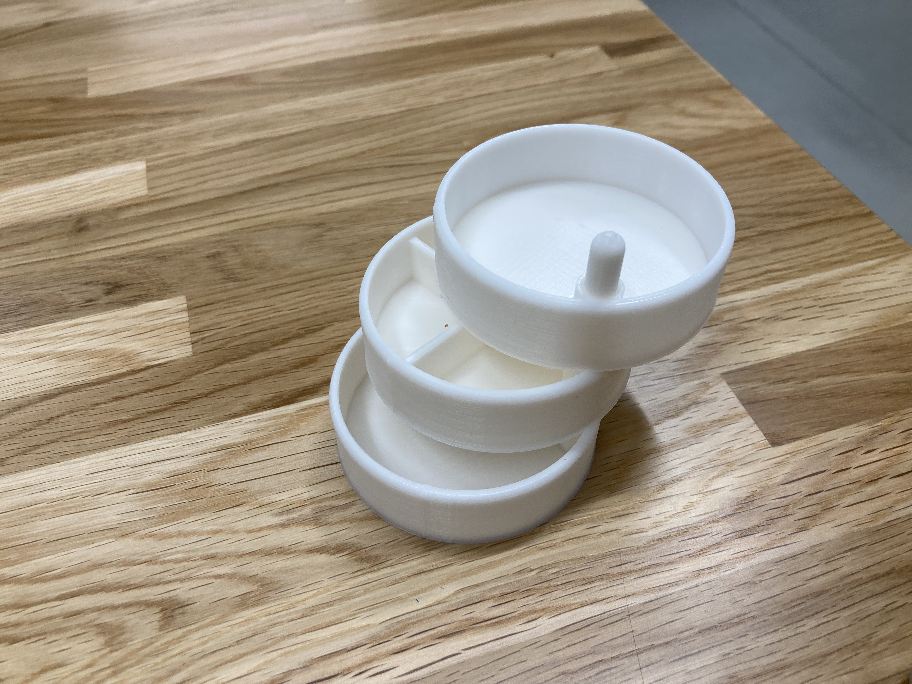
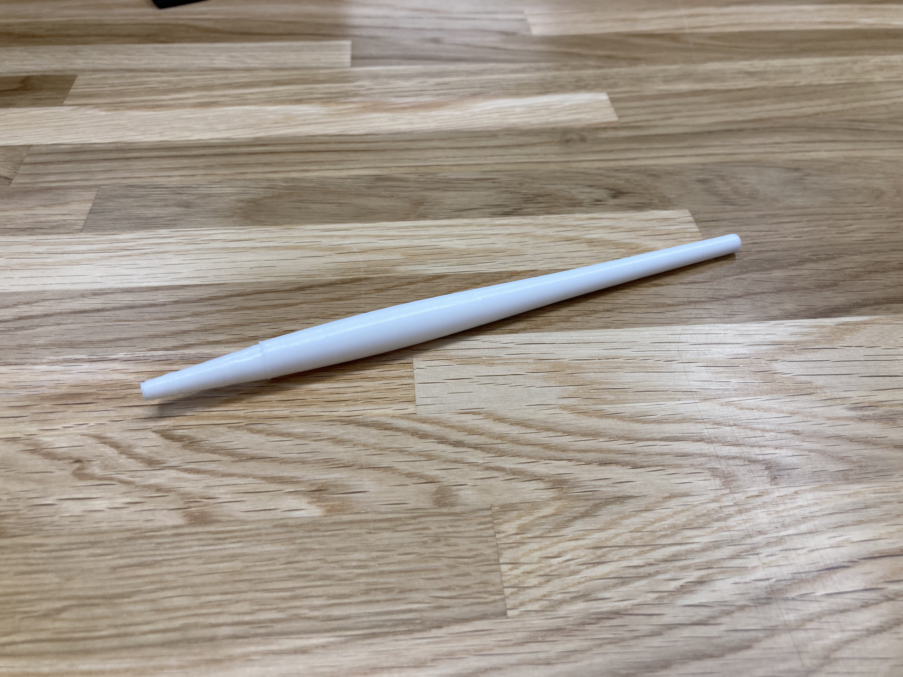
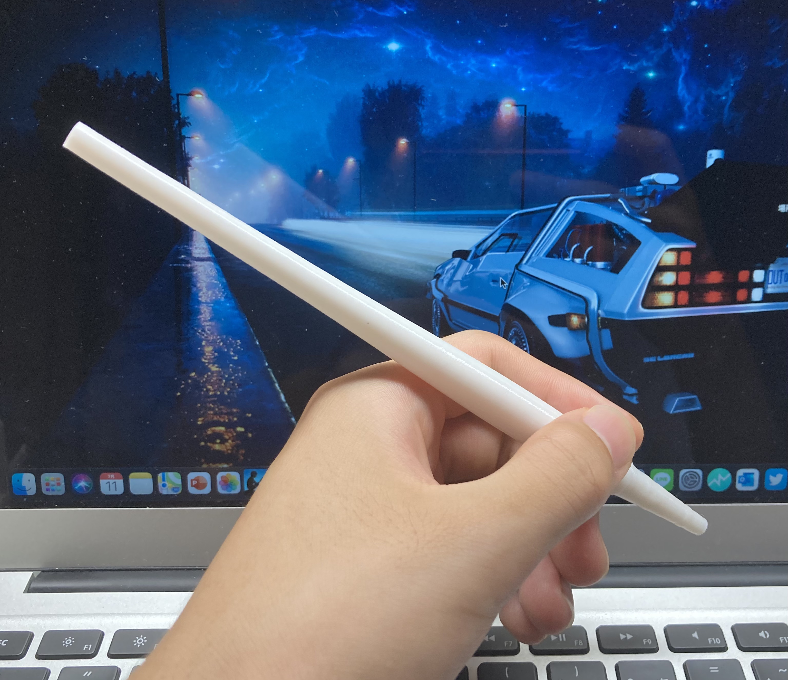
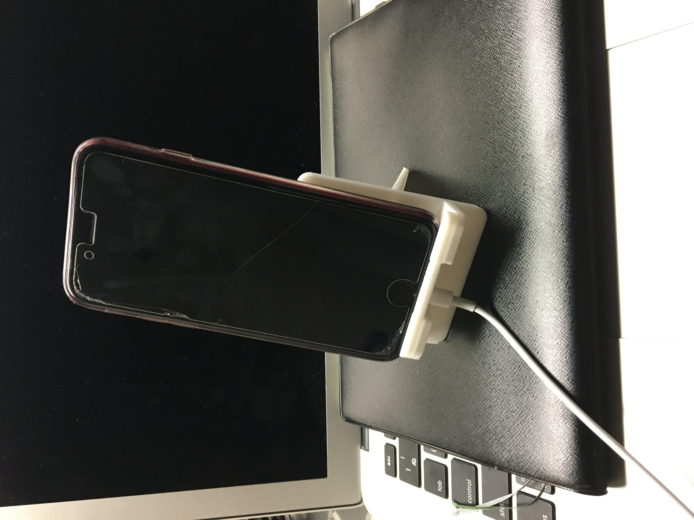
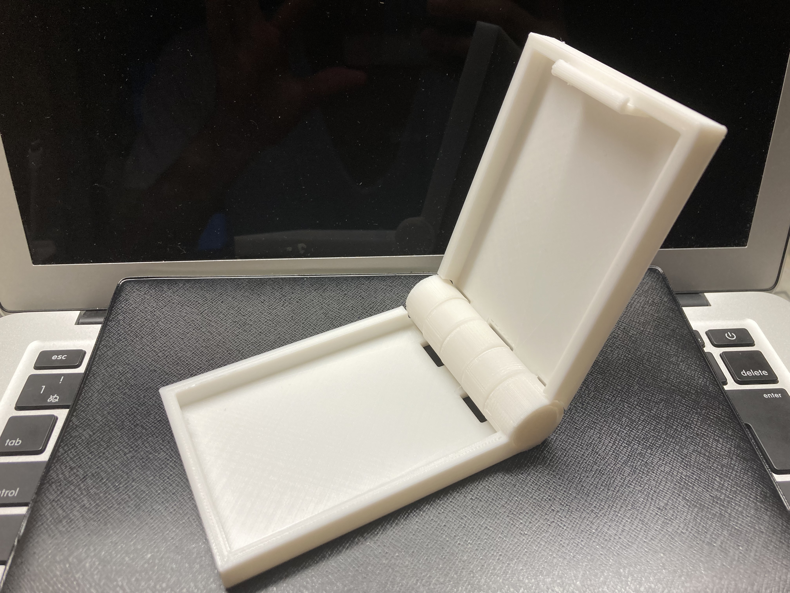
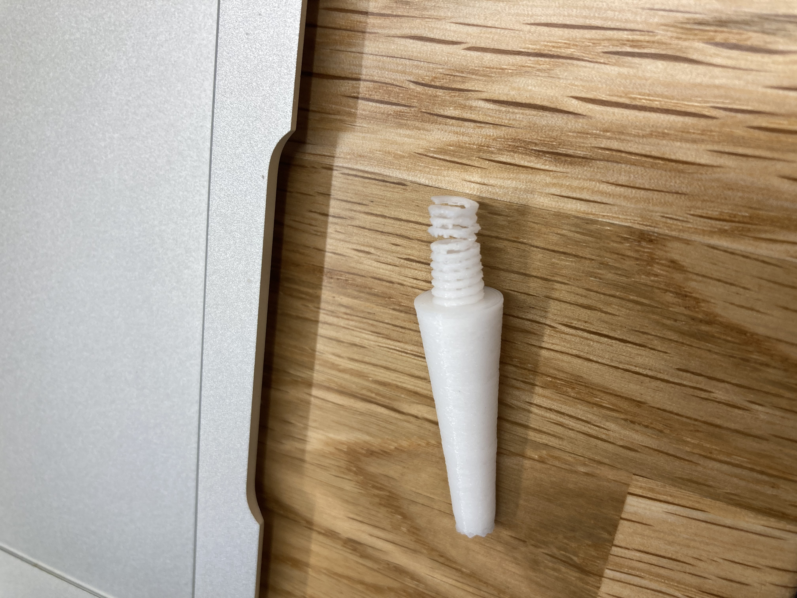

<!doctype html>
<html lang="jp">
<head>
    <meta charset="utf-8">
    <meta name="viewport" content="width=device-width, initial-scale=1">
    <title>7月　第2回</title>
    
    <link rel="stylesheet" href="main.css">
</head>


<body>
    <!--ホームに帰るためのボタン-->
    <logotohome>
  <blockquote> <h1>7月第２回</h1>
   <h2>今週生み出したものたち</h2>
   今週は今までのグッズとは趣向を変えて、生活の中で主役となるものたちを考えた<br>
   <h3>＜1＞</1></h3>
   こちらはデスクや洗面所などで使うことを想定した小物入れのようなものである⇩<br>
<br><br><br>
<iframe width="560" height="315" src="https://www.youtube-nocookie.com/embed/Dk33Ta-wtDo" title="YouTube video player" frameborder="0" allow="accelerometer; autoplay; clipboard-write; encrypted-media; gyroscope; picture-in-picture" allowfullscreen></iframe><br>
滑るようにスムーズに回転できる。容器の擦れる音が心地いい。<br>
支柱の高さを出せば容器を何個も重ねることができるため、限られたスペースでも収納力がある<br>
<h3>＜2＞</h3>
今週のメインです<br>
<br>
高級感のある形のペンを滑らかな曲線で作った（本体のモデリングにはロフトを使用することでなめらかさを出した）<br>
ボールペンの芯の長さは９cmを想定、芯の太さは３mmで作図<br>
<br><br>サイズ感はこんな感じ⇩<br>
<br>ネジ構造を用いた。ちょっと歪んだが十分に絞まる。
<br><br>
<iframe width="560" height="315" src="https://www.youtube-nocookie.com/embed/2GnuZuAYafM?controls=0" title="YouTube video player" frameborder="0" allow="accelerometer; autoplay; clipboard-write; encrypted-media; gyroscope; picture-in-picture" allowfullscreen></iframe><br>
<br><br>

☆制作上の問題点その１<br>
私はこれを縦に立てて印刷したのだが、この場合、一層一層の面積が小さいため、その層が固まる前に次の層の印刷に突入してしまう。<br>
そのため、初めに印刷したときは重力に負けてちょっと溶けたソフトクリームのような、モデリング図とは全く違うものが完成した　<br>
（ショックですぐ捨てちゃった。写真取っておけばよかった）<br>
その対策として、印刷のスピードを落とすという方法があった。（今回はスピードを５０%にした）<br>
スピードを落としてもこのサイズなら３０分くらいで印刷できる。<br>
<br>
☆制作上の問題点その２<br>
作図と実際に印刷したときの差異がある<br>
３mmでモデリングしても、印刷ではそれほどの正確さはなく、1.8mmくらいになっておった。（これも重力での歪みが影響してそう<br>

<br>
以上の問題から、まだ芯を入れて使うことはできていません。でもペンを作ることの望みは大いにある<br>

<h3>＜３＞</h3>
前回より小さいスマホスタンドを作った。家で使ってる。<br>
<br>
<h2>＜おまけ＞</h2>
失敗してしまった奴らを載せます<br>
<br>
カードケースを作ったのだが、素材が予想以上に硬くカチッとハマる想定で作図した部分が全部失敗だった。<br>
<br>
<br>
<br>
芯の穴を広く作りすぎたため、ネジの部分がもうバネになっちゃってた。<br>
<br>
<br>
　


</blockquote>


    
    
    
    </logotohome>

    <blockquote>


    

</blockquote>


</div>

    


<br>


        </div>


</div>
       
            

        <br>
        <br>
        
            
        
            </p>

</body>